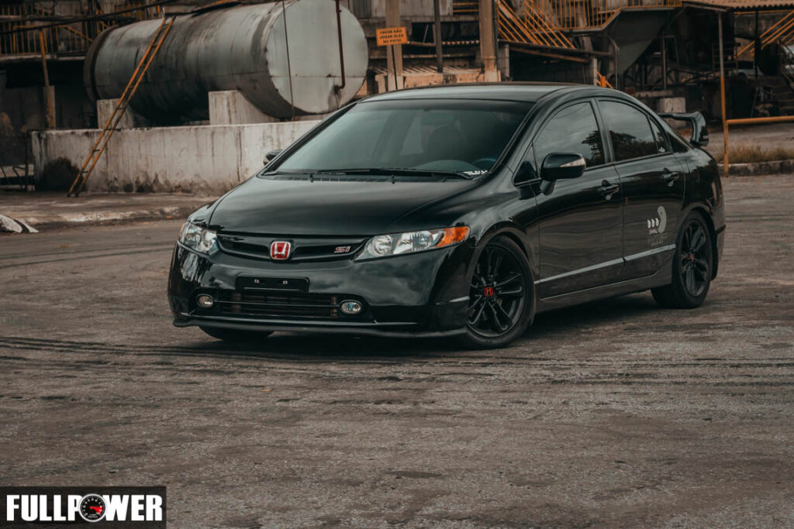

Para se ter uma ideia, o Civic Si Black Bull nasceu antes mesmo da própria preparadora. Mais do que isso, é possível afirmar que foi o projeto que fincou as bases da Rev It Up. Alam e Guilherme sempre foram fãs dos Volkswagen turbinados até o fim dos anos 1990, quando tiveram o primeiro contato com o Civic VTi. Impressionados com a elasticidade e o fluxo dos motores B16, logo perceberam o potencial da linha Honda.
A partir desse momento, foi apenas uma questão de tempo até começarem a preparar esses motores e ganhar notoriedade com seus vídeos — algo que começou como hobby, mas que, ao longo dos anos 2000, evoluiu para um trabalho cada vez mais profissional.
Em 2007, surgiu o Honda Civic Si. A Rev It Up foi uma das primeiras no Brasil a investir na preparação do motor K20. Inicialmente aspirado, o projeto focava em ajustes eletrônicos para elevar o limite de giro, melhorar o fluxo e reforçar os componentes internos. Trabalhando com um sistema piggyback da GReddy, eles conseguiram elevar o giro do motor para impressionantes 9.500 rpm. Isso trouxe grande visibilidade ao projeto, especialmente porque, na época, a ECU do Civic Si ainda era considerada uma “caixa preta”.

Fonte : Revista Full Power
O Black Bull passou por uma reformulação completa: saiu o Rotrex e entrou um turbo Precision roletado. O motor K-Series evoluiu para um K23 com curso reduzido, equipado com virabrequim forjado e aliviado, o que melhora a rotação, reduz o atrito e permite atingir até 10.000 rpm — operando, na maior parte do tempo, em torno de 9.400 rpm.
O conjunto interno conta com bielas e pistões forjados da CP (taxa de 10,2:1), além de camisas Darton no bloco. O cabeçote foi totalmente retrabalhado pela Jaques Motorsport, com válvulas redimensionadas e comandos Skunk2. Na lubrificação, foi adotada a bomba do Type R, além da remoção dos eixos balanceadores, contribuindo para ganho de desempenho.
Na alimentação, o sistema utiliza quatro injetores de 2.200 cc/min, duas bombas e catch tank — embora os injetores já estejam no limite da configuração atual. O escape é versátil: nas ruas, utiliza o Invidia Q300; já nas pistas, opera apenas com downpipe. O turbo menor foi escolhido para garantir melhor resposta e linearidade, operando com até seis níveis de pressão (de 0,7 a 1,68 bar), controlados via sistema TurboSmart. Isso permite ajustes por marcha e até situações extremas, como perda de tração em alta velocidade — ultrapassando 200 km/h ainda na quarta marcha.
Fonte : YouTube/Milarch
O Black Bull já entrega cerca de 1.006 cv, mas ainda vai evoluir: receberá uma turbina maior para aumentar o fluxo e trabalhar com mais de 2 bar de pressão (mais de 25% a mais). Como os injetores atuais estão no limite, serão adicionados mais quatro, junto com melhorias no coletor de admissão. Mesmo nessa fase, o desempenho impressiona: em testes de 200 a 260 km/h, ficou apenas 0,3 s atrás de um Nissan GT-R com 1.470 cv nas rodas — mostrando o nível extremo de performance do projeto.
Atualmente, o Black Bull entrega cerca de 1.006 cv, mas o projeto ainda está longe do limite. A próxima etapa inclui uma turbina maior, capaz de trabalhar com mais de 2 bar de pressão — um aumento superior a 25%. Além disso, o sistema de injeção será ampliado com mais quatro bicos, acompanhado de melhorias no coletor de admissão. Mesmo nesta fase, o desempenho já impressiona: em testes de retomada entre 200 e 260 km/h, o carro ficou apenas 0,3 segundo atrás de um Nissan GT-R com 1.470 cv nas rodas — evidenciando o nível extremo de performance do projeto.
O Civic Black Bull não é apenas um projeto de alta performance, mas um verdadeiro símbolo da evolução da preparação automotiva no Brasil. Com números impressionantes e um desenvolvimento constante, ele demonstra que ainda há muito potencial a ser explorado. Pelo ritmo das melhorias, é apenas questão de tempo até vermos esse projeto ultrapassar novos limites — possivelmente alcançando as 10.000 rpm e níveis ainda mais extremos de potência.
© 2026 Surgimento BlackBull. Todos os direitos reservados.